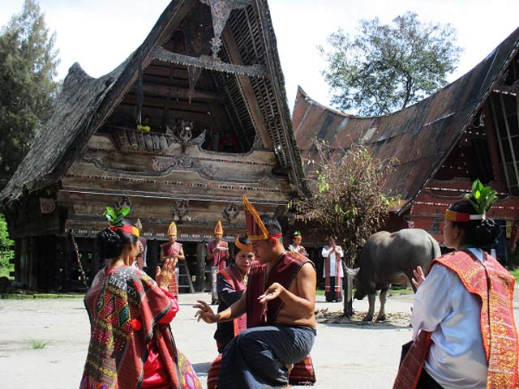

Sejarah Adat Batak

Orang batak ialah penutur bahasa Austronesia dimana bahasa dan bukti-bukti arkeologi menunjukkan bahwa orang yang berbahasa Austronesia berasal dari Taiwan yang telah berpindah ke wilayah Filipina dan Indonesia sekitar 2.500 tahun lalu pada zaman batu muda “Neolitikum”.
Belum diketahui kapan nenek moyang orang Batak pertama kali berada di Tapanuli dan Sumatera Timur. Karena hingga sekarang belum ada artefak Neolitikum yang ditemukan di wilayah Batak maka dapat diduga bahwa nenek moyang Batak baru bermigrasi ke Sumatera Utara pada zaman logam.
Bahasa Suku Batak
Bahasa yang digunakan oleh orang Batak ialah bahasa Batak dan sebagaian juga ada yang menggunakan bahasa Melayu. Setiap puak memiliki logat yang berbeda-beda. Orang Karo menggunakan Logat Karo, sementara logat Pakpak dipakai oleh Batak Pakpak, logat Simalungun dipakai oleh Batak Simalungun dan logat Toba dipakai oleh orang Batak Toba, Angkola dan Mandailing.
Kesenian Suku Batak
Tari Tor-tor merupakan kesenian yang dimiliki suku Batak, tarian ini bersifat magis, ada lagi Tari serampang dua belas yang hanya bersifat hiburan. Sementara alat musik tradisionalnya ialah Gong dan Saga-saga. Adapun warisan kebudayaan berbetuk kain ialah kain ulos. Kain hasil kerajinan tenun suku batak ini selalu ditampilkan dalam upacara perkawinan, mendirikan rumah, upacara kematian, penyerahan harta warisan, menyambut tamu yang dihormati dan upacara menari Tor-tor.
Agama dan Kepercayaan Suku Batak
Sebelum suku Batak Toba mengenal agama, mereka menganut sistem kepercayaan religi tentang Mulajadi na Bolon yang memiliki kekuasaan di atas langit dan pancaran kekuasaan-nya terwujud dalam Debata Natolu.
Menyangkut jiwa dan roh, suku Batak Toba mengenal tiga konsep yaitu:
-
Tondi
Merupakan jiwa atau roh seseorang yang merupakan kekuatan, oleh karena itu tondi memberi nyawa kepada manusia. Tondi di dapat sejak seseorang di dalam kandungan. Bila tondi meninggalkan badan seseorang, maka orang tersebut akan sakit atau meninggal, maka diadakan upacara mangalap “menjemput” tondi dari sombaon yang menawannya.
-
Sahala
Merupakan jiwa atau roh kekuatan yang dimiliki seseorang, semua orang memiliki tondi tetapi tidak semua orang memiliki sahala. Sahala sama dengan sumanta, tuah atau kesaktian yang dimiliki para raja atau hula-hula.
-
Begu
Merupakan tondi orang telah meninggal, yang tingkah lakunya sama dengan tingkah laku manusia, hanya muncul pada waktu malam.
Mata Pencaharian Suku Batak
Pada umumnya masyarakat batak bercocok tanam padi di sawah dan ladang. Lahan didapat dari pembagian yang didasarkan marga. Setiap keluarga mendapat tanah tadi tetapi tidak boleh menjualnya. Selain tanah ulayat adapun tanah yang dimiliki perseorangan.
Peternakan juga salah satu mata penvaharian suku batak antara lain perternakan kerbau, sapi, babi, kambing, ayam dan bebek. Penangkapan ikan dilakukan sebagian penduduk disekitar danau Toba. Sektor kerajinan juga berkembang, misalnya tenun, anyaman rotan, ukiran kayu, temmbikar, yang ada kaitnya dengan pariwisata.
Sistem Kekerabatan Suku Batak
Kekerabatan adalah menyangkut hubungan hukum antar orang dalam pergaulan hidup. Ada dua bentuk kekerabatan bagi suku Batak, yakni berdasarkan garis keturunan (genealogi) dan berdasarkan sosiologis, sementara kekerabatan teritorial tidak ada.
Bentuk kekerabatan berdasarkan garis keturunan (genealogi) terlihat dari silsilah marga mulai dari Si Raja Batak, dimana semua suku bangsa Batak memiliki marga. Sedangkan kekerabatan berdasarkan sosiologis terjadi melalui perjanjian (padan antar marga tertentu) maupun karena perkawinan. Dalam tradisi Batak, yang menjadi kesatuan Adat adalah ikatan sedarah dalam marga, kemudian Marga. Artinya misalnya Harahap, kesatuan adatnya adalah Marga Harahap vs Marga lainnya. Berhubung bahwa Adat Batak/Tradisi Batak sifatnya dinamis yang sering kali disesuaikan dengan waktu dan tempat berpengaruh terhadap perbedaan corak tradisi antar daerah.
Adanya falsafah dalam perumpamaan dalam bahasa Batak Toba yang berbunyi: Jonok dongan partubu jonokan do dongan parhundul. merupakan suatu filosofi agar kita senantiasa menjaga hubungan baik dengan tetangga, karena merekalah teman terdekat. Namun dalam pelaksanaan adat, yang pertama dicari adalah yang satu marga, walaupun pada dasarnya tetangga tidak boleh dilupakan dalam pelaksanaan Adat.
Adat Istiadat Suku Batak
Setiap suku tentu memiliki pandangan hidup yang dipakai sebagai pedoman hidup. Falsafah masing-masing suku tidak jarang kali berbeda-beda sebab kepercayaan yang mereka yakini pun berbeda. Berikut ialah nilai-nilai adat yang dipunyai oleh Suku Batak :
-
Hagabeon
Hagabeon ialah harapan masyarakat Batak guna mempunyai keturunan anak cucu yang baik.
Di samping baik mereka pun selalu bercita-cita anak cucu mereka diberi kesehatan sebab adalahpenerus mereka.
Tujuan utama dari pernikahan menurut keterangan dari orang Batak ialah mendapatkan keturunan.
Bagi mereka keturunan ialah suatu keberhasilan yang patut dibanggakan.
Terutama guna anak laki-laki yang seringkali akan meneruskan nama marganya. Uniknya lagi pada aturan adat kuno.
Jika kamu orang Batak pada zaman dahulu, kamu akan diajak mempunyai 33 anak diantaranya 17 anak laki-laki dan 16 anak perempuan. Namun seiring pertumbuhan zaman, aturan tersebut sudah tidak sedikit ditinggalkan.
Pada zaman kini yang dijadikan prioritas ialah kualitas dari seorang anak, bukan kuantitasnya. Maka bakal lebih dikhususkan untuk mengajar ketrampilan seorang anak dan menjangkau pendidikan yang tinggi.
-
Uhum Dan Ugari
Uhum dan ugari adalahhukum di masyarakat Batak. Orang Batak sangat mendirikan hukum dan memprioritaskan sikap keadilan.
Hukum adat batak ini erat kaitannya dengan suatu kesetiaan dan jani.
Jika terdapat yang melanggar suatu kesepakatan yang telah dijanjikan maka bakal menerima suatu sanksi.
Misalnya andai anda ialah orang Batak dan mempunyai sebuah kesepakatan dan telah berjanji.
Kemudian kamu berkhianat, maka kamu akan menerima sanksi serta bakal mendapat cacian dari masyarakat sekitar.
Hukum untuk orang Batak adalah suatu urusan yang sangat urgen untuk ditaati.
-
Marsisarian
Marsisarian adalah sebuah nilai guna saling menghormati, mengerti, dan membantu.
Nilai ini tercipta sebab adanya perbedaan dalam kehidupan bermasyarakat.
Maka dari tersebut dengan adanya nilai ini dapat menanggulangi konflik sosial yang ada.
Selain tersebut nilai ini pun mencegah terjadinya konflik lagi dalam kehidupan sosial.
-
Hamoraan
Hamoraan dalam bahasa indonesia memiliki makna kehormatan.
Seseorang bakal terhormat bilamana mempunyai kekayaan dan sikap baik terhadap sesama.
Contohnya andai anda ialah orang kaya namun tidak mau menolong yang kesusahan, maka kamu dianggap tidak mempunyai nilai hamoraan.
-
Pangayoman
Berdasarkan keterangan dari pendapat orang Batak pangayoman memiliki makna bahwa seluruh orang adalahpengayom.
Mereka orang Batak bakal senantiasa saling melindungi antar satu sama lain.
Nilai ini menjadikan orang Batak lebih berdikari dan tidak tidak jarang kali bergantung untuk orang lain.